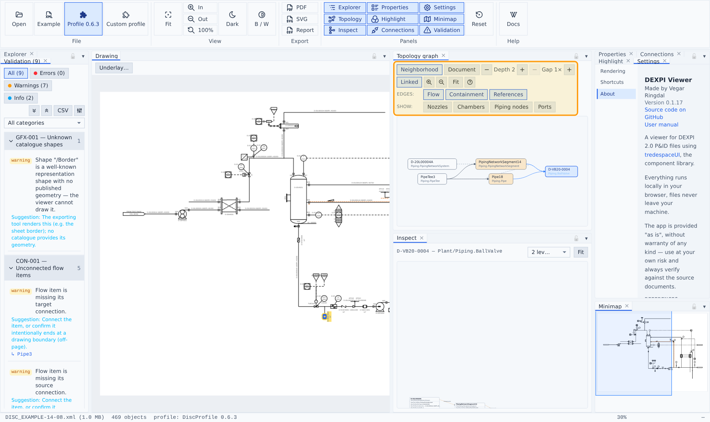
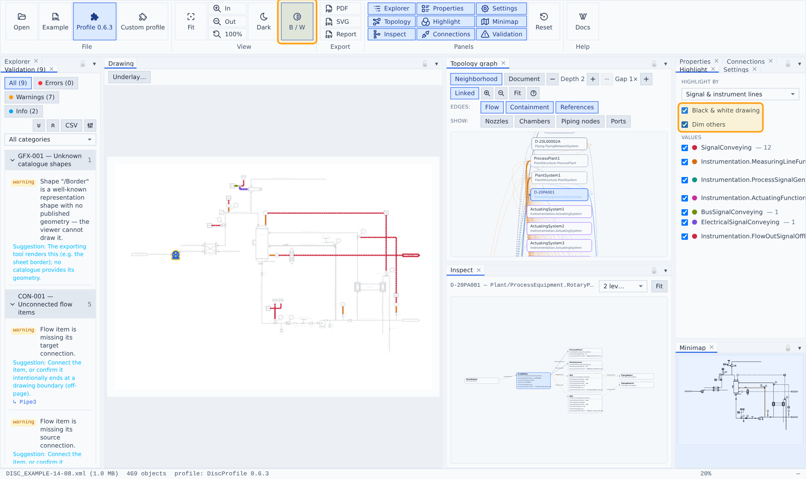

Topology & highlighting
Topology graph

The engineering data as a semantic network: plant objects as category-colored nodes with flow, containment and reference edges, laid out along the flow direction. Neighborhood mode graphs the current selection with an adjustable hop depth; Document mode graphs the whole file. Connection hardware (nozzles, chambers, piping nodes, ports) collapses into its owner or shows as mini nodes. Nodes sync with the global selection; double-click zooms the drawing.
Connections & tracing
The Connections panel lists the selected object's flow neighbours and traces upstream (amber) / downstream (green) through the piping — the trace tints the drawing and recirculation loops are called out.
Highlight

The Highlight panel tints the drawing by classification — heat-traced runs, signal/instrument lines, fluid code or piping class (with ancestor inheritance) — each value in its own color with a legend of counts and per-value visibility toggles. Signal mode groups per signal semantics (electrical, bus, measuring, …), so each type highlights in its own color. A Black & white drawing toggle (also the big B/W button in ribbon → View, which shows when it is on) renders the file's content in ink only, so highlight tints never mix with the drawing's own colors, and Dim others fades everything outside the highlighted groups so the tints stand out; the palette deliberately contains no blue — blue always means selection.
Semantic signal-line styling
Signal lines render by their semantics, matching the official DISC renderings: measuring and hydraulic lines solid, plain signal lines dashed, electrical lines solid with bracket marks, bus lines dashed with circle marks.